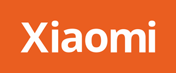

|
||
Xiaomi Owners |
||
LEI JUNFounder, Chairman, CEO Lei Jun, aged 52, is an Executive Director, the Founder, the Chairman and the CEO of the Company. He is also a member of the Remuneration Committee. Lei Jun is responsible for the Company’s overall corporate strategy, company culture and key products. He oversees the senior management team. Lei Jun currently holds directorships in various subsidiaries, Consolidated Affiliated Entities and operating entities of the Group. see more... |
||
LIN BINCo-Founder, Vice Chairman Lin Bin, aged 54, is an Executive Director, a Co-founder and Vice Chairman. He is also a member of the Nomination Committee. Lin Bin currently holds directorships in various subsidiaries of the Group. Lin Bin co-founded Xiaomi with Lei Jun in 2010. He served as President of Xiaomi until 2019 when he took the role of Vice Chairman of the Company. During the early phase of Xiaomi’s development, Bin was responsible for HR recruiting, legal and finance operation, strategic partnerships with key suppliers, and overseas market expansion in countries like India, Indonesia etc. As the company grew, Bin also oversaw the company’s domestic sales and marketing, after-sales services operations, and Xiaomi’s smartphone business. see more... |
||
|  | ||
Xiaomi Shop |
||
PhonesSee Products |
Xiaomi TvSee Products |
Smart DevicesSee Products |
Videos | ||
Location:Filipine | |
Contact and follow us: | |